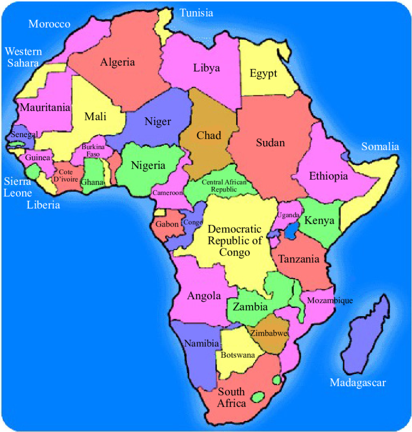

Netting A Healthier Future
Examining The Interplay Between The Use Of Insecticide Treated Mosquito Nets And Human Health
Introduction
This report endeavors to assess and delve into the correlation between the utilization of insecticide-treated mosquito nets (ITMNs) and their implications for human health. The increasing trend in ITMN usage holds the potential for creating a safer environment in terms of malaria prevention. However, upon scrutinizing the uptake of ITMNs and juxtaposing it with the life expectancy at birth in the countries from which our data was collected, contrasting outcomes emerge.
A World View
The Rise of ITMN Adoption
In Guinea-Bissau, Tanzania, Mali, Niger and Uganda there has been a dramatic increase in the adoption of insecticide treated mosquito nets between 2005 and 2021. This upward trajectory of adoption is due to the efforts of goverments, charitable organisations (i.e. unicef) and local communities. It is evident from the timeseries visualisation above that with each passing year the adoption of ITMNs is increasing. This inspires hope that these regions efforts may further reduce the threat of malaria as we progress into the future.

A Paradox: ITMN Adoption And The Unexpected Dip In Life Expectancy
As we take a look at a comparison of life expectancy at birth and the usage of ITMNs in 2015 it could be assumed life expectancy at birth and the use of ITMNs have a negative correlation. However, this is not the case. ITMNs prevent mosquitos spreading malaria therefore would increase life expectancy. As a result, this would deem the above comparison misleading and untrue.
A Snapshot Of Africa

A map of Africa is provided to the left to help you visualize where the following countries in this report are located:
- Mali
- Niger
- Guinea-Bissau
- Uganda
- United Republic of Tanzania. These countries have some of the highest adoption rates of ITMNs in this study.
In Mali, where life expectancy stands at 59 years, the adoption of ITMNs remains a critical focus to mitigate malaria-related mortality. Similarly, in Niger, with a life expectancy of 62 years, prioritizing the widespread use of ITMNs could significantly impact health outcomes. Tanzania, boasting a life expectancy of 66 years, underscores the importance of sustained efforts in ITMN adoption to enhance public health. In Uganda, with a life expectancy of 63 years, accelerating the adoption of ITMNs could lead to substantial gains in reducing malaria incidence. Guinea-Bissau, with a life expectancy of 60 years, emphasizes the urgent need for comprehensive ITMN initiatives to improve longevity and well-being.
Conclusion
In conclusion, while the adoption of insecticide-treated mosquito nets (ITMNs) has shown promising strides in mitigating the spread of malaria, the unexpected dip in life expectancy across certain regions raises intriguing questions. Efforts aimed at promoting ITMN usage must be coupled with a comprehensive approach that addresses other determinants of health, including access to healthcare, sanitation, nutrition, and socio-economic factors. By directing attention towards these multifaceted aspects, we can strive towards a holistic improvement in public health outcomes and ultimately pave the way for a healthier future for all.